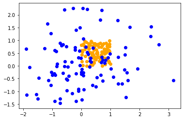
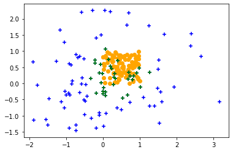

Get min and max distance withing a point cloud
In this article we will see how to filter all the point whose distance to any point in an ensemble of points is greater than a specified value. For example, we have two set of points : * the source in orange * the target in blue
And we want to find all the points in the target ensemble that are at most at a distance of 0.5 of any point in the source distribution.
%matplotlib inline
import matplotlib.pyplot as plt
import numpy as np
target = np.random.normal(0, 1, (100, 2))
source = np.random.random((100,2))
plt.scatter(source[:,0], source[:,1], color="orange")
plt.scatter(target[:,0], target[:,1], color="blue")
plt.show()

In order to do so, we will use the cdist function form the scipy.spatial.distance package. This function computes the distance between each pair of the two collections of points.
We compute the minimum distance form all the points in the target ensemble from any point in the source ensemble.
dist = cdist(source, target).min(axis=0)
Once the distance has been computed, we filter out all the points that have more distant that the threshold value.
dist[dist>thres] = False
dist[dist != False] = True
after that, we only need to format the result array and filter out all the zero values.
a = np.array([target[:,0]*dist, target[:,1]*dist]).T
return a[~(a==0).all(1)]
from scipy.spatial.distance import cdist
def filter_too_far(target, source, thres = 1):
"""
Filters out all the points in the target array
whose distance to any point in the source array
is greater than the threshold value
This function is made for 2D points
"""
dist = cdist(source, target).min(axis=0)
dist[dist>thres] = False
dist[dist != False] = True
a = np.array([target[:,0]*dist, target[:,1]*dist]).T
return a[~(a==0).all(1)]
Here we have in green all the point in the target ensemble that are distant from any point in the source ensemble of at most 0.5 units
filtered = filter_too_far(target, source, thres = 0.5)
plt.scatter(source[:,0], source[:,1], color="orange")
plt.scatter(target[:,0], target[:,1], color="blue", marker= "+")
plt.scatter(filtered[:,0], filtered[:,1], color="green", marker= "+")
<matplotlib.collections.PathCollection at 0x7fde375a4490>

This function can easily be adapted to work for 3D-points
from scipy.spatial.distance import cdist
def filter_too_far(target, source, thres = 1):
"""
Filters out all the points in the target array
whose distance to any point in the source array
is greater than the threshold value
This function is made for 3D points
"""
dist = cdist(source, target).min(axis=0)
dist[dist>thres] = False
dist[dist != False] = True
a = np.array([target[:,0]*dist, target[:,1]*dist, target[:,2]*dist]).T
return a[~(a==0).all(1)]
Note that you are not restricted to the euclidian distance, the cdist function can use the following distances: * braycurtis * canberra * chebyshev * cityblock * correlation * cosine * dice * euclidean * hamming * jaccard * jensenshannon * kulsinski * mahalanobis * matching * minkowski * rogerstanimoto * russellrao * euclidean * sokalmichener * sokalsneath * sqeuclidean * wminkowski * yule